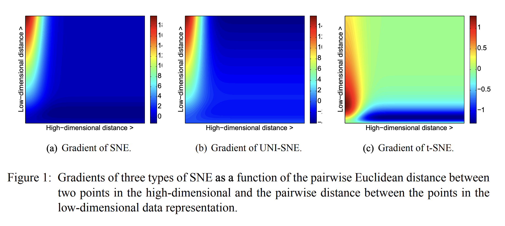
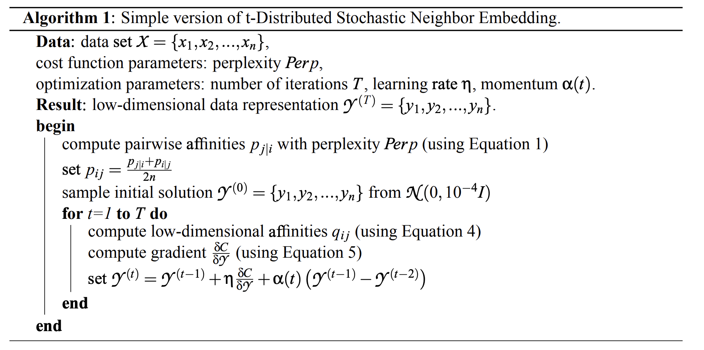

Visualizing Data using t-SNE
Laurens van der Maaten and Goeffrey Hinton, 2008
t-Distributed Stochastic Neighbor Embedding
Visualización de datos de alta dimensionalidad en dos o tres dimensiones
Variación sobre Stochastic Neighbor Embedding (Hinton and Roweis, 2002) pero más fácil de optimizar y con mejores visualizaciones
Extensión del algoritmo para datasets grandes sin grandes penalizaciones sobre el costo computacional
Métodos clásicos de reducción de dimensionalidad:
- Principal Component Analysis (PCA; Hotelling, 1933)
- Multi Dimensional Scaling (MDS; Kruskal, 1964)
Cuando los datos se encuentran en variedades no-lineales de baja dimensión embedidas en un espacio de alta dimensión, es más importante buscar que los puntos cercanos en el espacio original sigan siendo cercanos en la proyección
Esto no suele ser posible mediante transformaciones lineales
Otros métodos de reducción de dimensionalidad
- Sammon mapping (Sammon, 1969)
- Curvilinear component analysis (CCA; Demartines and Hérault, 1997)
- Stochastic Neighbor Embedding (SNE; Hinton and Roweis, 2002)
- Isomap (Tenenbaum et al., 2000)
- Maximum Variance Unfolding (MVU; Weinberger et al., 2004)
- Locally Linear Embedding (LLE; Roweis and Saul, 2000)
- Laplacian Eigenmaps (Belkin and Niyogi, 2002)
Esquema de la presentación:
- Introducción a SNE
- Presentación de t-SNE
- Experimentos comparando métodos
- Debilidades de t-SNE
- Conclusión
Stochastic Neighbor Embedding
\(\mathcal{X} = \{ x_1, x_2, \ldots, x_n \} \longrightarrow \mathcal{Y} = \{ y_1, y_2, \ldots, y_n \}\)
Idea:
Convertir las distancias de los datos en una matriz de similitudes dadas por probabilidades condicionales
Buscar una representación \(\mathcal{Y}\) con una matriz de similitudes lo más parecida posible a la de \(\mathcal{X}\)
Definimos la similitud del punto \(x_j\) con el punto \(x_i\) como \(p_{j|i}\)
\(p_{j|i}\): la probabilidad de que \(x_i\) elijiría a \(x_j\) como su vecino si los vecinos fueran seleccionados aleatoriamente en base a una distribución Gaussiana centrada en \(x_i\)
\(\sigma_i\): desviación estándar de la distribución Gaussiana centrada en \(x_i\)
Definimos la similitud del punto \(y_j\) con el punto \(y_i\) como \(q_{j|i}\)
\(q_{j|i}\): la probabilidad de que \(y_i\) elijiría a \(y_j\) como su vecino si los vecinos fueran seleccionados aleatoriamente en base a una distribución Gaussiana centrada en \(y_i\)
Definimos el costo de una representación como la suma de las divergencias de Kullback-Leibler entre \(P_i\) y \(Q_i\):
\[C = \sum_i KL(P_i || Q_i) = \sum_{i, j} p_{j|i} \log \frac{p_{j|i}}{q_{j|i}}\]
Minimizamos el costo de la representación usando descenso por el gradiente
\[ \frac{\partial C}{\partial y_i} = 2 \sum_j (p_{j|i} - q_{j|i} + p_{i|j} - q_{i|j})(y_i - y_j) \]
- \(\eta\): learning rate
- \(\alpha(t)\): momentum en la iteración t
- Se agrega ruido Gaussiano despues de cada iteración, para escapar de mínimos locales en la optimización
- Se deben elegir parámetros razonables para el ruido inicial y qué tan rápido disminuye su varianza
t-Distributed Stochastic Neighbor Embedding
Problemas de SNE
- Fución de costo difícil de optimizar
- Crowding Problem
Propuesta de cambio:
- Usar una versión simétrica de la función de costo de SNE, con un gradiente más fácil de calcular
- Usar una distribución t-student para calcular la similitud en \(\mathcal{Y}\), para aleviar el crowding problem y aumentar la velocidad de cómputo
SNE simétrico
SNE
\[C = \sum_i KL(P_i || Q_i) = \sum_{i, j} p_{j|i} \log \frac{p_{j|i}}{q_{j|i}}\]t-SNE
\[C = KL(P || Q) = \sum_{i, j} p_{ij} \log \frac{p_{ij}}{q_{ij}}\]\(q_{ij} = \frac{exp(-\|y_i - y_j\|^2)}{\sum_{k \neq l} exp(-\|y_l - y_k\|^2)}\) para \(i \neq j\)
Podríamos definir:
\(p_{ij} = \frac{exp(-\|x_i - x_j\|^2) / 2\sigma^2}{\sum_{k \neq l} exp(-\|x_l - x_k\|^2) / 2\sigma^2}\)
Pero esto nos traería problemas con outliers, ya que si \(x_i\) fuera un outlier, entonces \(p_{ij} \approx 0\) \(\forall j\) y luego la posición de \(y_i\) tendría poco efecto en la función de costo.
Entonces, definimos:
\(p_{ij} = \frac{p_{j|i} + p_{i|j}}{2n}\)
\(\sum_j p_{ij} > \frac{1}{2n} \forall i\)
Por lo tanto, todos los puntos tienen una contribución significante a la función de costo.
Crowding Problem
Distribución t-Student
\(f(t)={\frac {\Gamma ({\frac {\nu +1}{2}})}{{\sqrt {\nu \pi }}\,\Gamma ({\frac {\nu }{2}})}}\left(1+{\frac {t^{2}}{\nu }}\right)^{-(\nu +1)/2}\)
Surge al estimar la media de una población distribuida normalmente, pero con varianza desconocida.
Plan para aleviar el Crowding Problem:
Para \(\mathcal{X}\), seguir usando la distribución Gaussiana como antes:
\(p_{ij} = \frac{p_{j|i} + p_{i|j}}{2n}\)
Para \(\mathcal{Y}\), usar la distribución t-Student con 1 grado de libertad (equivalente a una distribución de Cauchy):
\(q_{ij} = \frac{(1 + \|y_i - y_j\|^2)^{-1}}{\sum_{k \neq l} (1 + \|y_l - y_k\|^2)^{-1}}\)
Resultados
Algoritmo simplificado t-SNE
Técnicas de optimización para t-SNE
- Adaptive learning rate
- Early compression
- Early exaggeration
Experimentos
- MNIST
- COIL-20
MNIST